PushT
CGSContact-rich pushing and rotation.
Rollout 01Goal
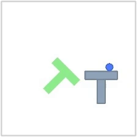
Rollout 02Goal
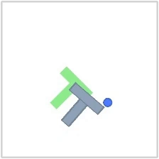
Texas A&M University
Match the geometry of latent changes to the geometry of actions, making good action sequences easier to find under limited planning budgets.
Joint-embedding predictive architectures enable planning with latent world models, but accurate transition prediction alone does not ensure that the planning objective is easy to optimize. We introduce Control-Geometry Straightening (CGS), a single auxiliary loss that learns planner-friendly representations by directly straightening control geometry for sampling-efficient planning. CGS matches pairwise cosine similarities among actions to those among corresponding latent differences only using local transitions from pixel–action pairs. The loss can be applied across world-model architectures using end-to-end learned or pretrained representations. Under linear-dynamics, our theoretical analysis connects this objective to temporal straightening and more balanced terminal-cost curvature across the full planning horizon, yielding finite-budget guarantees for MPPI, local contraction results for CEM, and convergence bounds for gradient descent. Across four control environments and multiple planners, CGS improves planning with fewer sampled candidates and refinement steps, achieving success-rate gains up to 20 and 12.6 percentage points over LeWorldModel (LeWM) and its temporal-straightening variant (LeWM+TS), respectively, with sampling-based planners using 128 candidates per update. Probes, comparisons with DINO-WM architecture, and planner-side ablations clarify how latent motion organization, state dependence, and dynamical context shape planning behavior. Straightening control geometry thus makes good action sequences easier to find under limited planning budgets.
Methodology
Similar actions should induce similar latent changes. Different actions should remain distinguishable—even when the trajectory turns.
For neighboring observations, CGS forms latent differences . It matches their pairwise cosine similarities to those of standardized actions within a short history window.
Rows of are unit action directions, with ; rows of are unit latent differences, with .
Here is a standardized action and is the number of transitions in the history window. Aligned, orthogonal, and opposing actions provide the corresponding angular targets.
CGS adds this auxiliary loss to LeWM’s prediction and SIGReg objectives. At planning time, the model is frozen and candidate action sequences are refined to bring the predicted endpoint closer to the goal embedding.
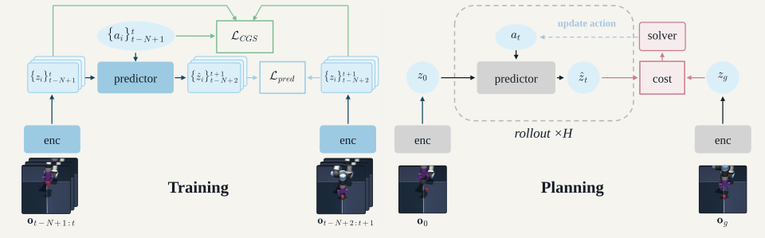
Understanding the representation
Latent differences follow action-related turns, making changes in control easier to distinguish in the representation.
Over an H-step rollout, CGS yields more balanced endpoint responses in the tested control plane. This helps a planner refine different controllable directions more evenly.
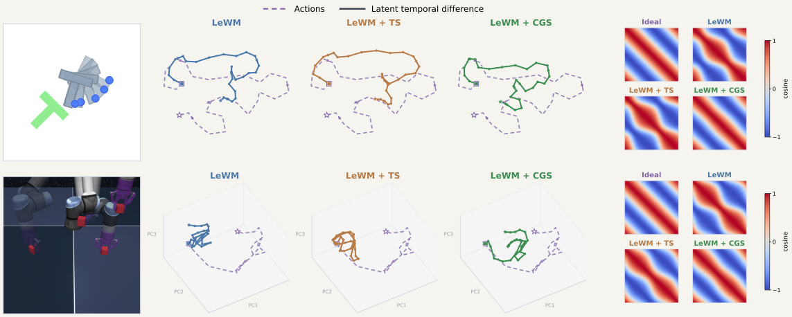
Consider . Under the paper’s fixed-radius and coverage assumptions, the CGS geometry objective encourages three complementary properties.
Terminal-cost curvature becomes more uniform on the active controllable subspace. That balance supports more efficient finite-budget refinement; it does not remove directions that cannot affect the endpoint.
Planning with CGS
CGS improves sampling-based planning across four environments. The largest gains appear on PushT and Cube; Reacher differences are smaller and depend on the planner and budget.
77.3% vs. 64.0% with LeWM
79.3% vs. 59.3% with LeWM
Same planner.
Same candidate budget.
A different representation.
| World Model | Planner | PushT | Cube | TwoRooms | Reacher |
|---|---|---|---|---|---|
| LeWM | MPPI | 64.0 ± 5.3 | 59.3 ± 4.6 | 92.0 ± 3.5 | 65.3 ± 4.2 |
| LeWM | PG-MPPI | 72.0 ± 6.0 | 89.3 ± 4.2 | 98.0 ± 2.0 | 62.7 ± 11.0 |
| LeWM | CEM | 89.3 ± 6.1 | 63.3 ± 2.3 | 76.7 ± 10.1 | 83.3 ± 8.3 |
| LeWM | PG-CEM | 92.0 ± 5.3 | 90.0 ± 2.0 | 93.3 ± 3.1 | 86.7 ± 6.1 |
| LeWM | GD | 85.3 ± 5.0 | 59.3 ± 8.1 | 41.3 ± 7.0 | 76.7 ± 4.2 |
| LeWM + TS | MPPI | 64.7 ± 8.3 (+0.7) | 75.3 ± 5.0 (+16.0) | 97.3 ± 3.1 (+5.3) | 64.0 ± 2.0 (-1.3) |
| LeWM + TS | PG-MPPI | 69.3 ± 9.0 (-2.7) | 92.7 ± 3.1 (+3.3) | 98.0 ± 2.0 (+0.0) | 66.7 ± 2.3 (+4.0) |
| LeWM + TS | CEM | 86.7 ± 5.0 (-2.7) | 73.3 ± 10.3 (+10.0) | 97.3 ± 1.2 (+20.7) | 81.3 ± 8.1 (-2.0) |
| LeWM + TS | PG-CEM | 90.0 ± 5.3 (-2.0) | 90.0 ± 2.0 (+0.0) | 100.0 ± 0.0 (+6.7) | 78.0 ± 2.0 (-8.7) |
| LeWM + TS | GD | 82.7 ± 5.8 (-2.7) | 65.3 ± 4.6 (+6.0) | 65.3 ± 9.9 (+24.0) | 81.3 ± 5.0 (+4.7) |
| LeWM + CGS | MPPI | 77.3 ± 6.4 (+13.3) | 79.3 ± 4.6 (+20.0) | 97.3 ± 1.2 (+5.3) | 66.7 ± 2.3 (+1.3) |
| LeWM + CGS | PG-MPPI | 80.0 ± 2.0 (+8.0) | 96.7 ± 3.1 (+7.3) | 100.0 ± 0.0 (+2.0) | 69.3 ± 3.1 (+6.7) |
| LeWM + CGS | CEM | 92.0 ± 3.5 (+2.7) | 76.7 ± 9.5 (+13.3) | 95.3 ± 1.2 (+18.7) | 80.7 ± 3.1 (-2.7) |
| LeWM + CGS | PG-CEM | 96.0 ± 0.0 (+4.0) | 96.0 ± 4.0 (+6.0) | 100.0 ± 0.0 (+6.7) | 81.3 ± 3.1 (-5.3) |
| LeWM + CGS | GD | 89.3 ± 6.4 (+4.0) | 71.3 ± 4.6 (+12.0) | 70.7 ± 3.1 (+29.3) | 82.0 ± 5.3 (+5.3) |
Select at least one planner to show results.
Three seeds, 50 episodes per seed; mean ± sample SD. Parentheses: change versus LeWM in percentage points; underlined: the two largest gains per task. Bold: best world model per planner and task. Sampling planners use 30 refinement steps; GD uses 100 Adam steps, independent of K. PG denotes a matched action prior.
MPPI without an action prior. Shaded bands show ± one sample SD.
Two CGS rollouts per environment. Each clip is paired with its goal observation.
Contact-rich pushing and rotation.


Object transport with a robot arm.
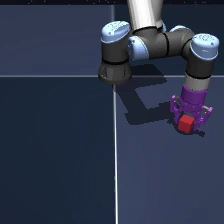
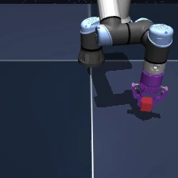
Goal-directed navigation through a doorway.
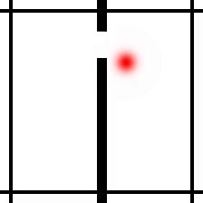
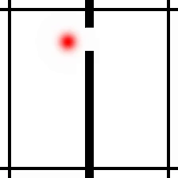
Coordinated control of a two-link arm.
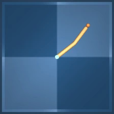
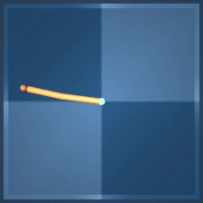
Characterizing CGS · Latent representations and planning
On PushT, CGS improves both linear and nonlinear motion decoding. Reacher remains strongly decodable nonlinearly, while its state-dependent action effects favor TS for linear organization.
Linear decoding · R²
MLP decoding · R²
Linear decoding · R²
MLP decoding · R²
CGS improves both global CLS and spatial Patch features in DINO-WM. LeWM’s jointly learned, compact latent retains strong planning performance at substantially lower rollout cost.
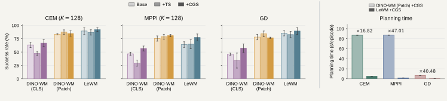
At a fixed candidate budget, CGS reaches high PushT performance in fewer refinement steps. It also improves matched BC-prior rollouts before candidate search begins.
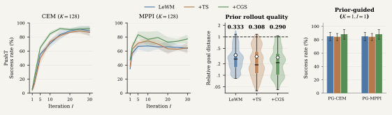
@article{fu2026controlgeometry,
title={Control-Geometry Straightening for Sampling-Based Latent Planning},
author={Fu, Ziang and Ning, Ning},
journal={arXiv preprint arXiv:2609.35603},
year={2026}
}